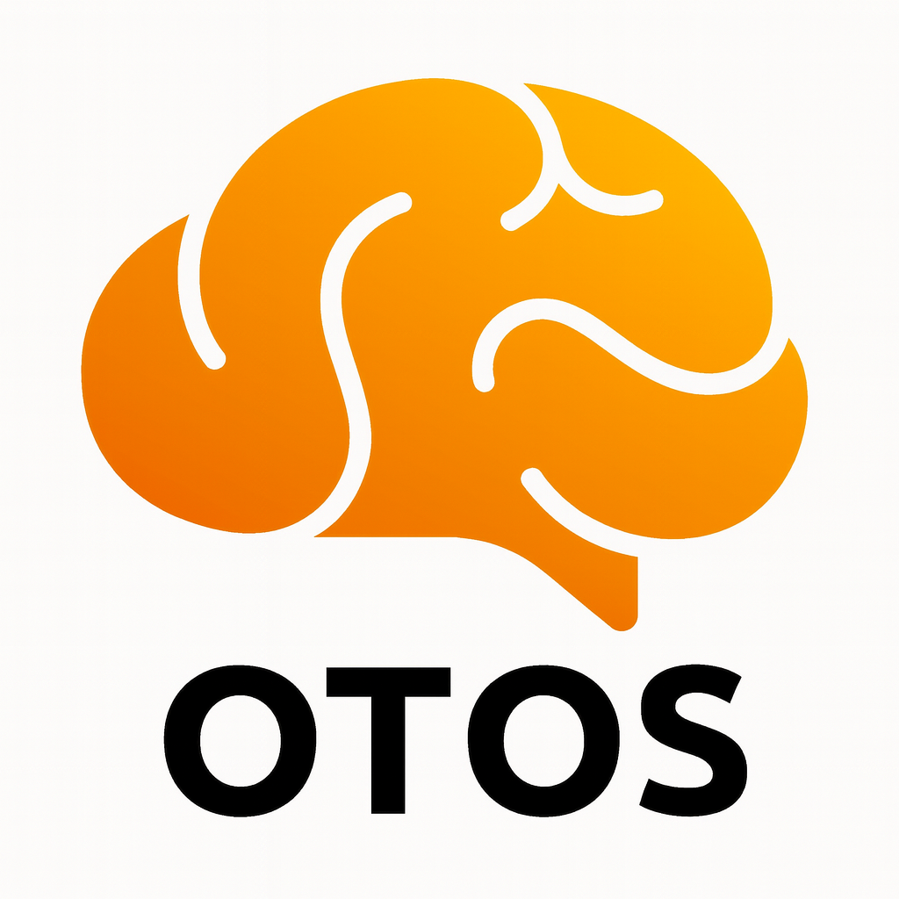

OTOS Cockpit
Enterprise execution surface. Human authority at the centre.
Agents operate within visible, bounded lanes.
TOP PRIORITY
Lock Parent Node Governance
Confirm write-gates and authority boundaries.
Confirm write-gates and authority boundaries.
Prepare Demo Narrative
Sequence system layers for stakeholder walkthrough.
Sequence system layers for stakeholder walkthrough.
Stabilise Visual Frame
Freeze layout before logic injection.
Freeze layout before logic injection.